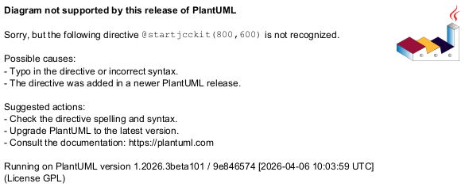

@startjcckit(800,600)
data/curves = c1 c2 c3
data/c1/y = 1998 1999 2000 2001 2002
data/c1/x = 31 32 44 61 55
data/c2/y = 1998 1999 2000 2001 2002
data/c2/x = 54 59 50 31 38
data/c3/y = 1998 1999 2000 2001 2002
data/c3/x = 15 9 6 8 7
background = 0xffffff
defaultCoordinateSystem/ticLabelFormat = %d
defaultCoordinateSystem/ticLabelAttributes/fontSize = 0.03
defaultCoordinateSystem/axisLabelAttributes/fontSize = 0.04
defaultCoordinateSystem/axisLabelAttributes/fontStyle = bold
plot/coordinateSystem/xAxis/ = defaultCoordinateSystem/
plot/coordinateSystem/xAxis/axisLabel =
plot/coordinateSystem/xAxis/ticLabelFormat = %d%%
plot/coordinateSystem/xAxis/grid = true
plot/coordinateSystem/xAxis/minimum = 0
plot/coordinateSystem/xAxis/maximum = 100
plot/coordinateSystem/yAxis/ = defaultCoordinateSystem/
plot/coordinateSystem/yAxis/axisLabel = year
plot/coordinateSystem/yAxis/minimum = 2002.5
plot/coordinateSystem/yAxis/maximum = 1997.5
plot/initialHintForNextCurve/className = jcckit.plot.PositionHint
plot/initialHintForNextCurve/position = 0.15 0
defaultDefinition/symbolFactory/className = jcckit.plot.BarFactory
defaultDefinition/symbolFactory/stacked = true
defaultDefinition/symbolFactory/size = 0.07
defaultDefinition/symbolFactory/horizontalBars = true
defaultDefinition/symbolFactory/attributes/className = jcckit.graphic.BasicGraphicAttributes
defaultDefinition/symbolFactory/attributes/lineColor = 0
defaultDefinition/withLine = false
plot/curveFactory/definitions = def1 def2 def3
plot/curveFactory/def1/ = defaultDefinition/
plot/curveFactory/def1/symbolFactory/attributes/fillColor = 0xcaff
plot/curveFactory/def2/ = defaultDefinition/
plot/curveFactory/def2/symbolFactory/attributes/fillColor = 0xffca00
plot/curveFactory/def3/ = defaultDefinition/
plot/curveFactory/def3/symbolFactory/attributes/fillColor = 0xa0ff80
plot/legendVisible = false
@endjcckit